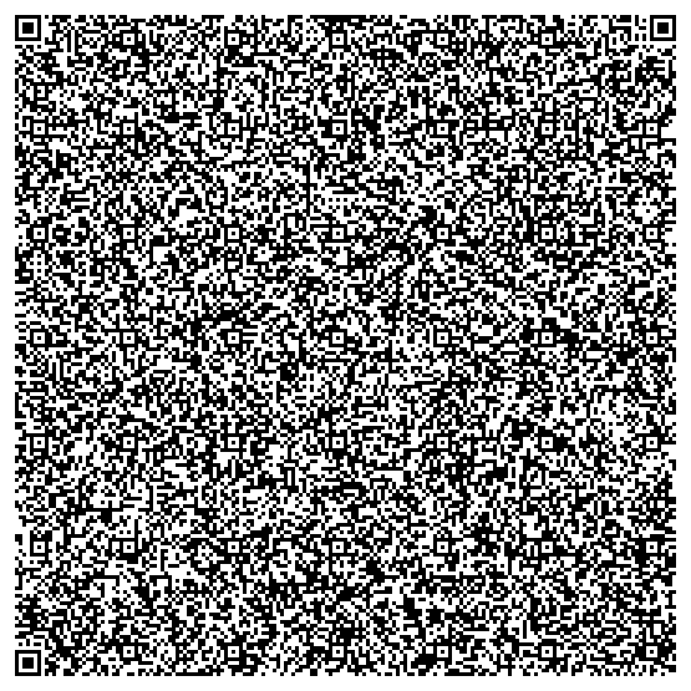

SCAN A QR · OPEN A WEBSITE
一张二维码里
装着一个网站。
扫描 asm-web 二维码：浏览器解码 ELF、解开 Brotli，在 sandbox iframe 里渲染页面。ELF 不会被执行。
也可以把二维码图片或 .elf 拖到这里

DEMO · TERMINAL
一张 2,890 B 的 personal-site 二维码。点“试试示例”，或上传这张 PNG。
CAMERA
把二维码放进框里
正在启动摄像头…
—
页面在 sandbox iframe 中渲染；CSP 禁止外部网络。ELF 没有被执行。